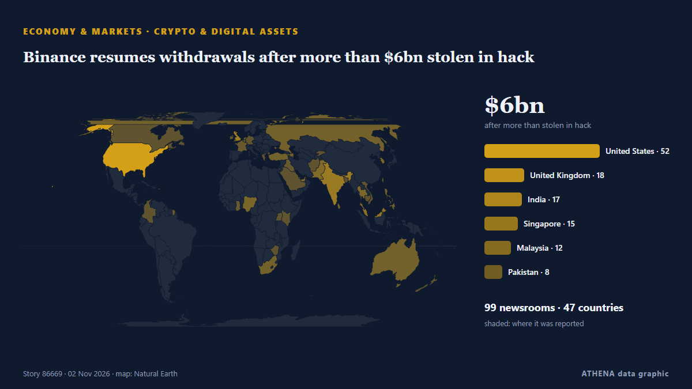

Économie, finance et marchés
SponsoriséPrésenté par  Cybernetics and Artificial Intelligence Lab Welcome to the Cybernetics and Artificial Intelligence Laboratory, established at the Department of Business Administration of the National
Cybernetics and Artificial Intelligence Lab Welcome to the Cybernetics and Artificial Intelligence Laboratory, established at the Department of Business Administration of the National
Les titres sont affichés en anglais, tels que publiés.
Veille des marchés - chiffres officiels
Dans quel sens évoluent les indicateurs officiels des marchés - hausse, baisse ou stabilité - avec la dernière valeur officielle et sa date, et l'actualité des marchés vérifiée par ATHENA. Valeurs officielles, pas des cours en temps réel.
Énergie
| 1 jour | 1 semaine | 1 mois | Valeur officielle | |
|---|---|---|---|---|
| Brent crude | ▼ | ▲ | ▲ | $123,10/bblDonnées officielles du 27 oct. 2026 |
| WTI crude | ▼ | ▼ | ▲ | $103,37/bblDonnées officielles du 27 oct. 2026 |
| US natural gas (Henry Hub) | ▲ | ▼ | ▼ | Mouvement inhabituel $2,76/MMBtuDonnées officielles du 27 oct. 2026 |
| European natural gas (1 mois · 3 mois · 12 mois)(1M · 3M · 12M) | ▲ | ▲ | ▲ | $25,49/MMBtuDonnées officielles du 1 sept. 2026 |
| Coal (Australia) (1 mois · 3 mois · 12 mois)(1M · 3M · 12M) | ▲ | ▲ | ▲ | $153,84/tDonnées officielles du 1 sept. 2026 |
Alimentation
| 1 mois | 3 mois | 12 mois | Valeur officielle | |
|---|---|---|---|---|
| Wheat | ▲ | ▲ | ▲ | $246,85/tDonnées officielles du 1 sept. 2026 |
Bourses américaines
| 1 jour | 1 semaine | 1 mois | Valeur officielle | |
|---|---|---|---|---|
| S&P 500 | ▼ | ▲ | ▲ | Direction seulement (indice © Cboe)Données officielles du 29 oct. 2026 |
| Nasdaq Composite | ▼ | ▲ | ▼ | Direction seulement (indice © Cboe)Données officielles du 29 oct. 2026 |
Taux, risque et dollar
| 1 jour | 1 semaine | 1 mois | Valeur officielle | |
|---|---|---|---|---|
| US 10-year Treasury yield | ▼ | ▲ | ▼ | 4,98 %Données officielles du 29 oct. 2026 |
| Market volatility (VIX) | ▲ | ▼ | ▲ | Direction seulement (indice © Cboe)Données officielles du 29 oct. 2026 |
| US dollar, broad index | ▬ | ▬ | ▲ | 121,32Données officielles du 23 oct. 2026 |
L'euro face aux autres monnaies
| 1 jour | 1 semaine | 1 mois | Valeur officielle | |
|---|---|---|---|---|
| EUR/USD | ▲ | ▼ | ▼ | 1,1172 USDDonnées officielles du 30 oct. 2026 |
| EUR/GBP | ▼ | ▼ | ▼ | 0,8338 GBPDonnées officielles du 30 oct. 2026 |
| EUR/CHF | ▼ | ▼ | ▼ | 0,9194 CHFDonnées officielles du 30 oct. 2026 |
| EUR/JPY | ▼ | ▲ | ▼ | 175,68 JPYDonnées officielles du 30 oct. 2026 |
| EUR/CNY | ▲ | ▼ | ▼ | 7,4326 CNYDonnées officielles du 30 oct. 2026 |
| EUR/TRY | ▲ | ▲ | ▲ | 55,801 TRYDonnées officielles du 30 oct. 2026 |
| EUR/NOK | ▼ | ▼ | ▼ | 10,3120 NOKDonnées officielles du 30 oct. 2026 |
Sources : Energy Information Administration des États-Unis (pétrole, gaz américain), FMI (gaz européen, charbon, blé), Trésor et Réserve fédérale des États-Unis (taux à 10 ans, indice du dollar) Cboe (VIX), S&P Dow Jones Indices (S&P 500) et Nasdaq (Nasdaq Composite), via FRED (Réserve fédérale de Saint-Louis) ; taux de référence de l'euro © Banque centrale européenne. Les chiffres sont les dernières valeurs officielles avec leur date, pas des cours en temps réel. Les directions sont calculées par ATHENA.
Crypto, ETF et actions dans l'actualité
- Anthropic plans to sell $3.5 billion of shares to Japan investors in IPO, filing shows Risque 1.8 2 nov.
- Crypto starts 2026 STRONG! Venezuela Impacts on the market! Lighter TGE reactions! Risque 0.8 2 nov.
- First 2026 Dip! BTC at 92K! Morgan Stanley file for BTC, ETH & SOL ETFs! Hyperliquid Airdrop Speculation! Risque 0.0 2 nov.
- The ZCash situation explained! Interview with ZEC bull Mert! BTC below $90K! ZEC falls 19%! Risque 0.5 2 nov.
- Trump sues JPMorgan for $5B! Ledger prepares for $4B IPO! “Crypto Adoption is no longer reversible” says PWC! Risque 0.0 2 nov.
- Palm falls over 1% on weaker rival oils, higher stocks Risque 0.9 2 nov.
- Sonia meets Lalu in Delhi; Tejashwi shares photos, reminisces UPA-era tie Risque 2.7 2 nov.
- Gold and Silver sell-off continues, Silver to $45.50? EUR/USD at key support, crypto bearish [Video] Risque 3.9 2 nov.
- Seoul stocks rebound over 2 pct on bargain hunting Risque 0.9 2 nov.
- Seoul stocks open lower as disappointing tech earnings trigger AI spending woes Risque 5.0 2 nov.

Crypto et actifs numériquesBinance resumes withdrawals after more than $6bn stolen in hack
An on-chain tally puts the suspected Binance drain at $5.57 billion across three blockchains, as Tether and Circle froze $1.8 billion. de Decrypt
| 20 oct. | 9 |
|---|---|
| 21 oct. | 34 |
| 22 oct. | 82 |
| 23 oct. | 61 |
| 24 oct. | 28 |
| 25 oct. | 29 |
| 26 oct. | 121 |
| 27 oct. | 131 |
| 28 oct. | 129 |
| 29 oct. | 104 |
| 30 oct. | 113 |
| 31 oct. | 25 |
| 1 nov. | 47 |
| 2 nov. | 34 |
Australia squad for England series — Full list of players; AUS vs ENG complete schedule
Australia plays three home ODIs against England between November 13-18 followed by five T20s. de Sportstar
Scam centres relocated from Cambodia raided in Madagascar
Raids against online scam centres in Madagascar have exposed ties with a criminal group that ran similar operations in Cambodia, also duping African nationals via human trafficking, authorities say. de Bangkok Post
State pensioners born before 1960 waking up to DWP £300 payments
Payments are being handed out to millions of pensioners. de Birmingham Mail
Nigeria: Adesina, Sanusi, Otti, Others to Lead African Prosperity Talks in Abuja
[This Day] Abuja -- Former President of the African Development Bank (AfDB), Dr Akinwumi Adesina; Emir of Kano, Muhammadu Sanusi II; and Abia State Governor, Alex Otti, are among prominent African… de AllAfrica
Gold rebounds from one-year low near $3,900
Shafaq News Gold prices bounced on Monday, after a selloff in the previous session, as weaker oil prices tempered inflation concerns, while investors assessed comments from the Federal Reserve for… de Shafaq News (English)
France HCOB Manufacturing PMI came in at 49.5, above forecasts (49.3) in October
Bangladesh garment factories reopen as wage protests keep industry on edge
The workers’ demands reflect mounting pressure from rising living costs and persistent inflation. de CNA (Channel NewsAsia)
Israeli forces fire tear gas at Palestinian students, teachers in West Bank as occupiers block roads
Israeli army, occupiers carry out 3,133 attacks last month in 52.8% increase from previous month, commission says. de Express Tribune
Seoul stocks open lower as disappointing tech earnings trigger AI spending woes
Japan’s October factory growth slows as costs pick up: PMI
New orders also increased for a 10th consecutive month. de The Business Times
Australian home prices fall for seventh month
The heightened risk of another imminent rate hike adds to more pain. de The Business Times
Greece Introduces New Gender Pay Transparency Rules
Greece introduces new pay transparency rules requiring employers to disclose salary ranges, address unjustified gender pay gaps and guarantee equal pay. de Greek City Times
Bitcoin price falls below $80,000 again
Cryptocurrency prices continued to decline, with all major digital assets recording losses over the past 24 hours, according to data from CoinMarketCap. de AzerNews
iCOMPASS Unveils KY-AI™ in Hong Kong as Banks Face New AI Governance Expectations
Introduced at Hong Kong FinTech Week, KY-AI™ brings a structured approach to AI oversight, aligned with the accountability, resilience and trust principles of the HKMA’s ART Framework. de Laotian Times
ECB keeps rates on hold as Christine Lagarde announced her resignation
The deposit rate will be left at 2.5% on Thursday, analysts say. de Luxembourg Times
Candidates of Both Parties Pitch Credit Card Interest Rate Caps
Candidates of both parties are advocating caps on credit card interest rates as they campaign for next week’s midterm elections, Bloomberg reported Saturday (Oct. de PYMNTS
OPay Halts $4 Billion NYSE IPO on Listing Day
OPay, a digital financial platform built for emerging markets, has decided to postpone its planned initial public offering due to “an ongoing inquiry by a regulatory authority,” the company said in a… de PYMNTS
S&P cuts Meta’s outlook to negative
Meta has been given a negative outlook by S&P Global Ratings due to the company's hefty capital expenditures and concerns about free cash flow. de CNBC World
Treasury minister: ‘I don’t think employers are working people’
A top treasury minister has said she does not think “employers are working people” reigniting fierce debate over whether Labour broke its manifesto pledge not to raise taxes for working people. de City A.M.
Israeli army arrests 5 Palestinians in West Bank raids
Israeli forces raid homes of Palestinians in Nablus, Qalandiya refugee camp, according to Palestinian Prisoners’ Media Office. de Anadolu Agency (English)
Trick or treat? Police respond to more than 100 disturbances over Halloween
In Luxembourg City two individuals threw fire crackers at officers. de Luxembourg Times
CJP backs INDIA bloc's Ramlila Maidan rally, but won't participate in it, says Dipke; cites ‘neutral platform’ identity
Abhijeet Dipke said the CJP supported the cause but would maintain its independent identity. de Hindustan Times
How Kalshi can help the Federal Reserve
Prediction markets may be a win for central banking. de The Economist - Finance & economics
FBI blames North Korea for US$6 billion Binance crypto hack
Binance says a security breach impacted about $6.3 billion in assets. de CNBC World
Binance replenishes 90% of assets stolen in security incident
The exchange said it remained on track to resume withdrawal services on Sunday, November 1, within its previously stated timeframe. de The Jerusalem Post
Tech sell-off and Binance hack rattle investors
Amazon and Intel worsen the sell-off with disappointing earnings releases. de CNBC World
Liquidators agree sale of China Evergrande property management unit
Asia Pacific-focused investment firm PAG will buy a majority stake in Evergrande Property Service for HK$4 billion (US$514 million). de CNA (Channel NewsAsia)
WHO statement on notification of withdrawal of the United States
WHO regrets the United States’ notification of withdrawal from WHO – a decision that makes both the United States and the world less safe. de WHO news
Italy demands release of another group of activists detained in West Bank
(ANSA) - ROME, 30 OTT - The Italian Foreign Ministry has called for the "immediate release" of five Italian activists detained in the West Bank on Thursday while accompanying Palestinian farmers… de ANSA English
Bank of Canada maintains the policy rate at 2¼%
The Bank of Canada today held its target for the overnight rate at 2.25%, with the Bank Rate at 2.5% and the deposit rate at 2.20%. de Bank of Canada
Crypto exchanges call for quick moves to bolster defences after Binance heist
A record US$6.3 billion hack of Binance exposes its vulnerability. de The Business Times
Warren Buffett hasn't had a drink of water in 50 years. At least, that's what he told Bill Ackman.
Bill Ackman says he once asked Warren Buffett if he drinks water. de Business Insider
As it happened: Binance’s record $6.3B crypto hack
How Binance’s $6.3 billion hack unfolded, from the first onchain alerts to $3 billion in frozen funds and a widening security investigation. de Cointelegraph
Gold Slides to 13-Month Low as Rising Energy Prices Weigh on Markets
LONDON, Oct 30: Gold prices fell below $3,900 an ounce on Friday, hitting their lowest level in 13 months as persistently high global energy prices continued to weigh on precious m... de Arab Times